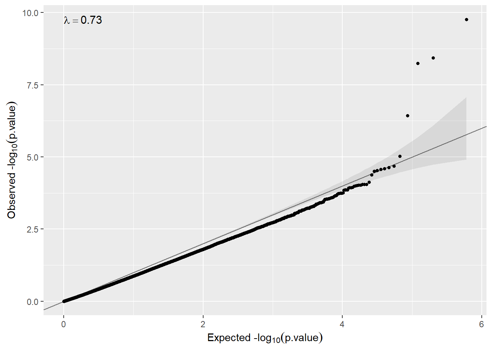

12 Epigenetic analysis in the HELIX cohort.
In this section, we will illustrate how to perform DNA methylation differential analysis using real data from the HELIX project. Particularly, we will analyse microarray data deriving from the Infinium HumanMethylation450k platform of Illumina. On these data, we will show how to perform a epigenome-wide association analysis (EWAS) to compare the DNA methylation profiles differing between boys and girls in the HELIX cohorts. We will illustrate the following use cases:
- Full genome meta-analysis.
- Full genome meta-analysis adjusting for surrogate variables.
In comparison to gene expression data, where data are not always normalized in the same way (especially in the case of RNAseq data), when analyzing EWAS data one count on normalized Beta or M-Values. This favors the harmonization of the dataset between cohorts, thereby making possible to perform a pooled analysis instead of a meta-analysis approach.
12.1 Getting started.
In this section, we will describe how to configure R and DataSHIELD with the needed packages to carry out proposed analyses in remote. We start by installing the client-side version of the following DataSHIELD/Opal integration packages.
install.packages("DSOpal", dependencies=TRUE)
install.packages("DSI", dependencies=TRUE)Make sure you also install the DataSHIELD client-side version of the package dsBaseClient.
install.packages("dsBaseClient",
repos = c("http://cran.datashield.org","https://cloud.r-project.org/"),
dependencies = TRUE)Then, install the client-side version of the dsOmicsClient package directly from GitHub.
install.packages("devtools")
require("devtools")
devtools::install_github("isglobal-brge/dsOmicsClient",ref="master",
auth_token = "INSERT_YOUR_GITHUB_TOKEN_HERE")Once installations are completed, all the packages are loaded as usual.
require(DSOpal)
require(DSI)
require(dsBaseClient)
require(dsOmicsClient)
# Loading additional required packages (if not installed, you can easly install them using the BiocManager::install() function)
require(clusterProfiler)
require(org.Hs.eg.db)12.2 Data formatting and manipulation in DataSHIELD.
In this section, we will cover how to load and inspect input microarray data with DataSHIELD. We start by creating the connection to the opal server using an user who have DataSHIELD permissions.
builder <- DSI::newDSLoginBuilder()
builder$append(server = "BIB", url = "https://datashield.isglobal.org/repo",
user = "invited", password = "12345678"
, profile = "rock-inma")
builder$append(server = "EDEN", url = "https://datashield.isglobal.org/repo",
user = "invited", password = "12345678",
profile = "rock-inma")
builder$append(server = "KANC", url = "https://datashield.isglobal.org/repo",
user = "invited", password = "12345678",
profile = "rock-inma")
builder$append(server = "MoBA", url = "https://datashield.isglobal.org/repo",
user = "invited", password = "12345678",
profile = "rock-inma")
builder$append(server = "Rhea", url = "https://datashield.isglobal.org/repo",
user = "invited", password = "12345678",
profile = "rock-inma")
builder$append(server = "INMASAB", url ="https://datashield.isglobal.org/repo",
user = "invited", password = "12345678",
profile = "rock-inma")
logindata <- builder$build()
conns <- DSI::datashield.login(logins = logindata)Now that we have created a connection object to the Opal, we have started a new R session on the server, and our analysis will take place in this remote session, so we have to load the data into it. In this use case, available data are in the form GenomicRatioSet, a extend of the class SummarizedExperiment especially designed for DNA methylation data obtained with the Infinium HumanMethylation450k platform and usually analysed with the associated R package minfi. This type of data usually contain pre-processed DNA methylation values at a genome-wide level, in the form of M or/and Beta values, together with the associated genomic coordinates. As in the case of ExpressionSet types, GenomicRatioSet can also incorporate phenotype and metadata information.
For our showcase, one GenomicRatioSet file per cohort is hosted in the Opal BRGE site in the form of a resource, all organized within the Opal server in a project called HELIX_omics.
For loading these data into the remote DataSHIELD session we will use the DSI::datashield.assign.resource() function. This function takes the connections to the server created in the previous code chunk to assign all available resource objects from a project in the Opal to an R object in the DataSHIELD remote session. As it can be seen in the code, resources in DataSHIELD are called in the function following the next structure “NameOfOpalProject.NameOfResource”.
# We assign post-natal data from all cohorts to an object called resource_pos
DSI::datashield.assign.resource(conns[1], "assinged_resource_DNAm",
"HELIX_omics.methy_BIB")
DSI::datashield.assign.resource(conns[2], "assinged_resource_DNAm",
"HELIX_omics.methy_EDE")
DSI::datashield.assign.resource(conns[3], "assinged_resource_DNAm",
"HELIX_omics.methy_KAN")
DSI::datashield.assign.resource(conns[4], "assinged_resource_DNAm",
"HELIX_omics.methy_MOB")
DSI::datashield.assign.resource(conns[5], "assinged_resource_DNAm",
"HELIX_omics.methy_RHE")
DSI::datashield.assign.resource(conns[6], "assinged_resource_DNAm",
"HELIX_omics.methy_SAB")Then, we have to resolve the resources and retrieve the data in the remote session (server-side). For that, we will use the DSI::datashield.assign.expr() function. As a result, we will get an R object (here named “resource_DNAm”) containing the available GenomicRatioSet files for cohorts. For created objects, we can extract some useful information including the dimension, class, and the name of the CpGs analysed in the microarray and additional phenotype data available.
# We resolve the resource
DSI::datashield.assign.expr(conns = conns, symbol = "resource_DNAm",
expr = as.symbol("as.resource.object(assinged_resource_DNAm)"))
ds.dim("resource_DNAm")
ds.class("resource_DNAm")
#The names of the CpGs included in the array can be extracted using
# the same function used for extracting probe names in the case of analyzing
# an ExpressionSet:
name.features <- ds.featureNames("resource_DNAm")
lapply(name.features, head)[[1]]
#Experimental phenotypes variables can be obtained by:
name.phenotypes <- ds.varLabels("resource_DNAm")
lapply(name.phenotypes, head)[[1]]
#Also the annotation information can be obtained by:
name.annot <- ds.fvarLabels("resource_DNAm")
lapply(name.annot, head)[[1]]12.3 Full genome meta-analysis.
If we want to perform a quick full EWAS analysis in DataSHIELD we must run a meta-analysis approach (analyzing each cohort separately). For that, we can use the same function than in the showcase of transcriptomic analysis (ds.limma()).
meta.model.sex <- ds.limma(model = ~ e3_sex,
Set = "resource_DNAm",
datasources = conns)Then, we can visualize the top significant CpGs at each study (i.e server) by:
lapply(meta.model.sex, head)$BIB
# A tibble: 6 x 7
id n beta SE t P.Value adj.P.Val
<chr> <int> <dbl> <dbl> <dbl> <dbl> <dbl>
1 cg15035382 162 0.0482 0.0117 4.72 0.00000502 0.936
2 cg08308934 162 0.0239 0.00324 4.67 0.00000626 0.936
3 cg06166863 162 -0.0239 0.00860 -4.48 0.0000138 1.00
4 cg19617080 162 0.0158 0.00466 4.20 0.0000437 1.00
5 cg26328510 162 -0.0181 0.0113 -4.17 0.0000500 1.00
6 cg20041381 162 0.0184 0.00445 4.12 0.0000593 1.00
$EDEN
# A tibble: 6 x 7
id n beta SE t P.Value adj.P.Val
<chr> <int> <dbl> <dbl> <dbl> <dbl> <dbl>
1 cg22339219 82 -0.0239 0.0157 -4.58 0.0000156 0.999
2 cg26256793 82 0.0217 0.00932 4.40 0.0000308 0.999
3 cg22672067 82 -0.0256 0.0103 -4.39 0.0000321 0.999
4 cg04920428 82 -0.0303 0.00518 -4.38 0.0000336 0.999
5 cg24052148 82 -0.0249 0.0139 -4.34 0.0000390 0.999
6 cg11822659 82 -0.0299 0.00676 -4.34 0.0000394 0.999
$KANC
# A tibble: 6 x 7
id n beta SE t P.Value adj.P.Val
<chr> <int> <dbl> <dbl> <dbl> <dbl> <dbl>
1 cg12052203 146 0.107 0.0131 4.93 0.00000218 0.473
2 cg22266749 146 0.0650 0.00323 4.84 0.00000316 0.473
3 cg21411366 146 0.0368 0.00901 4.22 0.0000429 1.00
4 cg16216407 146 0.0329 0.00425 4.12 0.0000638 1.00
5 cg08093323 146 0.0220 0.0124 4.08 0.0000730 1.00
6 cg23108580 146 -0.0321 0.00414 -4.04 0.0000853 1.00
$MoBA
# A tibble: 6 x 7
id n beta SE t P.Value adj.P.Val
<chr> <int> <dbl> <dbl> <dbl> <dbl> <dbl>
1 cg12205554 196 -0.0138 0.0102 -4.26 0.0000320 1.00
2 cg06998765 196 -0.0238 0.00267 -4.19 0.0000418 1.00
3 cg25240363 196 0.0112 0.00806 4.17 0.0000462 1.00
4 cg11643285 196 -0.0282 0.00343 -4.15 0.0000500 1.00
5 cg27191131 196 -0.0126 0.00998 -4.06 0.0000714 1.00
6 cg27150870 196 0.0220 0.00384 4.05 0.0000725 1.00
$Rhea
# A tibble: 6 x 7
id n beta SE t P.Value adj.P.Val
<chr> <int> <dbl> <dbl> <dbl> <dbl> <dbl>
1 cg15777472 156 0.0328 0.0136 4.73 0.00000485 1.00
2 cg19249678 156 0.0126 0.00334 4.55 0.0000106 1.00
3 cg21377936 156 0.0223 0.00939 4.54 0.0000111 1.00
4 cg12052203 156 0.0800 0.00385 4.41 0.0000193 1.00
5 cg12613618 156 0.0373 0.0110 4.32 0.0000272 1.00
6 cg06544141 156 0.0142 0.00454 4.31 0.0000280 1.00
$INMASAB
# A tibble: 6 x 7
id n beta SE t P.Value adj.P.Val
<chr> <int> <dbl> <dbl> <dbl> <dbl> <dbl>
1 cg05293407 176 0.0189 0.0114 4.70 0.00000511 1.00
2 cg02802904 176 0.0125 0.00500 4.35 0.0000232 1.00
3 cg22810281 176 -0.0178 0.00893 -4.30 0.0000281 1.00
4 cg18126027 176 -0.0134 0.00421 -4.17 0.0000479 1.00
5 cg03368690 176 -0.0146 0.0108 -4.12 0.0000576 1.00
6 cg03691818 176 -0.0331 0.00368 -4.11 0.0000597 1.00As in the case of gene expression analysis, annotation columns can be added to the output by using the argument annotCols. It should be a vector with the columns of the annotation available in the GenomeRatioSet that want to be showed. To obtain the available annotation columns use the function ds.fvarLabels().
meta.model.sex.annot <- ds.limma(model = ~ e3_sex,
Set = "resource_DNAm",
annotCols = c("chromosome","start","end","UCSC_RefGene_Name"),
datasources = conns)
lapply(meta.model.sex.annot, head)$BIB
# A tibble: 6 x 11
id n beta SE t P.Value adj.P.Val chromosome start end
<chr> <int> <dbl> <dbl> <dbl> <dbl> <dbl> <chr> <int> <int>
1 cg150~ 162 0.0482 0.0117 4.72 5.02e-6 0.936 chr19 4.07e7 4.07e7
2 cg083~ 162 0.0239 0.00324 4.67 6.26e-6 0.936 chr14 9.20e7 9.20e7
3 cg061~ 162 -0.0239 0.00860 -4.48 1.38e-5 1.00 chr14 3.96e7 3.96e7
4 cg196~ 162 0.0158 0.00466 4.20 4.37e-5 1.00 chr3 1.83e8 1.83e8
5 cg263~ 162 -0.0181 0.0113 -4.17 5.00e-5 1.00 chr10 1.11e7 1.11e7
6 cg200~ 162 0.0184 0.00445 4.12 5.93e-5 1.00 chr1 1.86e8 1.86e8
# ... with 1 more variable: UCSC_RefGene_Name <chr>
$EDEN
# A tibble: 6 x 11
id n beta SE t P.Value adj.P.Val chromosome start end
<chr> <int> <dbl> <dbl> <dbl> <dbl> <dbl> <chr> <int> <int>
1 cg223~ 82 -0.0239 0.0157 -4.58 1.56e-5 0.999 chr7 1.05e8 1.05e8
2 cg262~ 82 0.0217 0.00932 4.40 3.08e-5 0.999 chr1 1.04e8 1.04e8
3 cg226~ 82 -0.0256 0.0103 -4.39 3.21e-5 0.999 chr15 7.45e7 7.45e7
4 cg049~ 82 -0.0303 0.00518 -4.38 3.36e-5 0.999 chr17 5.77e7 5.77e7
5 cg240~ 82 -0.0249 0.0139 -4.34 3.90e-5 0.999 chr19 4.07e6 4.07e6
6 cg118~ 82 -0.0299 0.00676 -4.34 3.94e-5 0.999 chr20 5.31e7 5.31e7
# ... with 1 more variable: UCSC_RefGene_Name <chr>
$KANC
# A tibble: 6 x 11
id n beta SE t P.Value adj.P.Val chromosome start end
<chr> <int> <dbl> <dbl> <dbl> <dbl> <dbl> <chr> <int> <int>
1 cg120~ 146 0.107 0.0131 4.93 2.18e-6 0.473 chr11 6.61e7 6.61e7
2 cg222~ 146 0.0650 0.00323 4.84 3.16e-6 0.473 chr4 1.10e8 1.10e8
3 cg214~ 146 0.0368 0.00901 4.22 4.29e-5 1.00 chr4 2.48e7 2.48e7
4 cg162~ 146 0.0329 0.00425 4.12 6.38e-5 1.00 chr4 2.48e7 2.48e7
5 cg080~ 146 0.0220 0.0124 4.08 7.30e-5 1.00 chr11 3.24e6 3.24e6
6 cg231~ 146 -0.0321 0.00414 -4.04 8.53e-5 1.00 chr12 3.98e7 3.98e7
# ... with 1 more variable: UCSC_RefGene_Name <chr>
$MoBA
# A tibble: 6 x 11
id n beta SE t P.Value adj.P.Val chromosome start end
<chr> <int> <dbl> <dbl> <dbl> <dbl> <dbl> <chr> <int> <int>
1 cg122~ 196 -0.0138 0.0102 -4.26 3.20e-5 1.00 chr10 1.57e6 1.57e6
2 cg069~ 196 -0.0238 0.00267 -4.19 4.18e-5 1.00 chr14 7.54e7 7.54e7
3 cg252~ 196 0.0112 0.00806 4.17 4.62e-5 1.00 chr17 2.80e7 2.80e7
4 cg116~ 196 -0.0282 0.00343 -4.15 5.00e-5 1.00 chr3 1.64e7 1.64e7
5 cg271~ 196 -0.0126 0.00998 -4.06 7.14e-5 1.00 chr3 1.34e8 1.34e8
6 cg271~ 196 0.0220 0.00384 4.05 7.25e-5 1.00 chr16 8.94e7 8.94e7
# ... with 1 more variable: UCSC_RefGene_Name <chr>
$Rhea
# A tibble: 6 x 11
id n beta SE t P.Value adj.P.Val chromosome start end
<chr> <int> <dbl> <dbl> <dbl> <dbl> <dbl> <chr> <int> <int>
1 cg1577~ 156 0.0328 0.0136 4.73 4.85e-6 1.00 chr11 6.57e7 6.57e7
2 cg1924~ 156 0.0126 0.00334 4.55 1.06e-5 1.00 chr7 1.57e8 1.57e8
3 cg2137~ 156 0.0223 0.00939 4.54 1.11e-5 1.00 chr7 4.77e6 4.77e6
4 cg1205~ 156 0.0800 0.00385 4.41 1.93e-5 1.00 chr11 6.61e7 6.61e7
5 cg1261~ 156 0.0373 0.0110 4.32 2.72e-5 1.00 chr11 6.37e7 6.37e7
6 cg0654~ 156 0.0142 0.00454 4.31 2.80e-5 1.00 chr1 2.73e7 2.73e7
# ... with 1 more variable: UCSC_RefGene_Name <chr>
$INMASAB
# A tibble: 6 x 11
id n beta SE t P.Value adj.P.Val chromosome start end
<chr> <int> <dbl> <dbl> <dbl> <dbl> <dbl> <chr> <int> <int>
1 cg052~ 176 0.0189 0.0114 4.70 5.11e-6 1.00 chr6 2.89e7 2.89e7
2 cg028~ 176 0.0125 0.00500 4.35 2.32e-5 1.00 chr10 1.31e8 1.31e8
3 cg228~ 176 -0.0178 0.00893 -4.30 2.81e-5 1.00 chr6 3.19e7 3.19e7
4 cg181~ 176 -0.0134 0.00421 -4.17 4.79e-5 1.00 chr6 1.61e8 1.61e8
5 cg033~ 176 -0.0146 0.0108 -4.12 5.76e-5 1.00 chr16 2.73e7 2.73e7
6 cg036~ 176 -0.0331 0.00368 -4.11 5.97e-5 1.00 chr12 5.31e7 5.31e7
# ... with 1 more variable: UCSC_RefGene_Name <chr>Up to this point, we have obtained association results for each cohort on the study. The next step is to combine this information using meta-analysis methods to derive a pooled estimate closest to the common truth. Each researcher might have an already built pipeline to do so, or a preferred method; nevertheless, we included a couple methods inside dsOmicsClient. They are the following:
- Meta-analysis of p-values: Using the sum of logs method (Fisher’s method).
- Meta-analysis of beta values: Using a fixed-effects model. Methodology extracted and adapted from (Pirinen 2020).
metaP.model.sex.annot <- metaPvalues(meta.model.sex.annot)
metaP.model.sex.annot# A tibble: 299,221 x 8
id BIB EDEN KANC MoBA Rhea INMASAB p.meta
<chr> <dbl> <dbl> <dbl> <dbl> <dbl> <dbl> <dbl>
1 cg12052203 0.423 0.0522 0.00000218 0.0257 0.0000193 0.0129 1.72e-10
2 cg22266749 0.571 0.0193 0.00000316 0.0668 0.000117 0.0399 3.67e- 9
3 cg11643285 0.00267 0.909 0.0322 0.0000500 0.000136 0.0345 5.71e- 9
4 cg03691818 0.0115 0.674 0.0291 0.00979 0.0207 0.0000597 3.71e- 7
5 cg07210061 0.351 0.00238 0.358 0.00365 0.0331 0.00414 9.33e- 6
6 cg25698541 0.00102 0.129 0.807 0.00271 0.107 0.0133 2.06e- 5
7 cg15422033 0.317 0.0496 0.00381 0.887 0.000845 0.0108 2.35e- 5
8 cg23108580 0.578 0.00227 0.0000853 0.0495 0.115 0.852 2.57e- 5
9 cg12613618 0.158 0.0988 0.00425 0.472 0.0000272 0.689 2.73e- 5
10 cg24537724 0.165 0.754 0.000380 0.0265 0.0297 0.0171 2.90e- 5
# ... with 299,211 more rowsWe can create a QQ-plot by using the function qqplot() available in our package.
qqplot(metaP.model.sex.annot$p.meta)
Here, as can be observed, there is no need to remove unwanted variability (λ<2). Nevertheless, we will illustrate how to proceed in case of observing inflation.
12.4 Adjusting for surrogate variables.
The vast majority of omic studies require to control for unwanted variability. The surrogate variable analysis can address this issue by estimating some hidden covariates that capture differences across individuals due to some artifacts such as batch effects or sample quality among others. The method is implemented in SVA package.
Performing this type of analysis using the ds.lmFeature function is not allowed since estimating SVA would require to implement a non-disclosive method that computes SVA from the different servers. This will be a future topic of the dsOmicsClient. For that reason we have to adopt a compromise solution which is to perform the SVA independently at each study. We use the ds.limma function to perform the analyses adjusted for SVA at each study. Especially for the case of EWAS data this kind of analysis is important since it is usual to find important sources of unwanted variability affecting the global levels of methylation (e.g., the existence of different white-cell proportions when the sample type under analysis is whole-blood)
meta.model.sex.annot.sva <- ds.limma(model = ~ e3_sex,
Set = "resource_DNAm",
sva = TRUE,
annotCols = c("chromosome","start","end","UCSC_RefGene_Name"))
meta.model.sex.annot.sva$BIB
# A tibble: 299,221 x 11
id n beta SE t P.Value adj.P.Val chromosome start end
<chr> <int> <dbl> <dbl> <dbl> <dbl> <dbl> <chr> <int> <int>
1 cg150~ 162 0.0482 0.0117 4.72 5.02e-6 0.936 chr19 4.07e7 4.07e7
2 cg083~ 162 0.0239 0.00324 4.67 6.26e-6 0.936 chr14 9.20e7 9.20e7
3 cg061~ 162 -0.0239 0.00860 -4.48 1.38e-5 1.00 chr14 3.96e7 3.96e7
4 cg196~ 162 0.0158 0.00466 4.20 4.37e-5 1.00 chr3 1.83e8 1.83e8
5 cg263~ 162 -0.0181 0.0113 -4.17 5.00e-5 1.00 chr10 1.11e7 1.11e7
6 cg200~ 162 0.0184 0.00445 4.12 5.93e-5 1.00 chr1 1.86e8 1.86e8
7 cg276~ 162 -0.0143 0.00425 -4.06 7.64e-5 1.00 chr20 2.45e6 2.45e6
8 cg049~ 162 -0.0134 0.00354 -4.05 7.83e-5 1.00 chr1 2.34e8 2.34e8
9 cg090~ 162 -0.0141 0.00471 -4.01 9.15e-5 1.00 chr16 8.10e7 8.10e7
10 cg257~ 162 -0.0414 0.00373 -4.01 9.21e-5 1.00 chr18 2.86e7 2.86e7
# ... with 299,211 more rows, and 1 more variable: UCSC_RefGene_Name <chr>
$EDEN
# A tibble: 299,221 x 11
id n beta SE t P.Value adj.P.Val chromosome start end
<chr> <int> <dbl> <dbl> <dbl> <dbl> <dbl> <chr> <int> <int>
1 cg223~ 82 -0.0239 0.0157 -4.58 1.56e-5 0.999 chr7 1.05e8 1.05e8
2 cg262~ 82 0.0217 0.00932 4.40 3.08e-5 0.999 chr1 1.04e8 1.04e8
3 cg226~ 82 -0.0256 0.0103 -4.39 3.21e-5 0.999 chr15 7.45e7 7.45e7
4 cg049~ 82 -0.0303 0.00518 -4.38 3.36e-5 0.999 chr17 5.77e7 5.77e7
5 cg240~ 82 -0.0249 0.0139 -4.34 3.90e-5 0.999 chr19 4.07e6 4.07e6
6 cg118~ 82 -0.0299 0.00676 -4.34 3.94e-5 0.999 chr20 5.31e7 5.31e7
7 cg231~ 82 0.0283 0.00631 4.30 4.47e-5 0.999 chr5 1.77e8 1.77e8
8 cg042~ 82 0.0246 0.00559 4.20 6.58e-5 0.999 chr12 1.09e7 1.09e7
9 cg005~ 82 -0.0274 0.00624 -4.20 6.60e-5 0.999 chr19 5.00e7 5.00e7
10 cg223~ 82 0.0306 0.00985 4.19 6.69e-5 0.999 chr19 6.21e6 6.21e6
# ... with 299,211 more rows, and 1 more variable: UCSC_RefGene_Name <chr>
$KANC
# A tibble: 299,221 x 11
id n beta SE t P.Value adj.P.Val chromosome start end
<chr> <int> <dbl> <dbl> <dbl> <dbl> <dbl> <chr> <int> <int>
1 cg120~ 146 0.107 0.0131 4.93 2.18e-6 0.473 chr11 6.61e7 6.61e7
2 cg222~ 146 0.0650 0.00323 4.84 3.16e-6 0.473 chr4 1.10e8 1.10e8
3 cg214~ 146 0.0368 0.00901 4.22 4.29e-5 1.00 chr4 2.48e7 2.48e7
4 cg162~ 146 0.0329 0.00425 4.12 6.38e-5 1.00 chr4 2.48e7 2.48e7
5 cg080~ 146 0.0220 0.0124 4.08 7.30e-5 1.00 chr11 3.24e6 3.24e6
6 cg231~ 146 -0.0321 0.00414 -4.04 8.53e-5 1.00 chr12 3.98e7 3.98e7
7 cg099~ 146 0.0169 0.00407 4.00 1.01e-4 1.00 chr2 2.19e8 2.19e8
8 cg135~ 146 -0.0163 0.00439 -3.98 1.07e-4 1.00 chr3 5.23e7 5.23e7
9 cg275~ 146 -0.0132 0.00451 -3.97 1.10e-4 1.00 chr17 1.89e7 1.89e7
10 cg008~ 146 0.0195 0.00400 3.97 1.12e-4 1.00 chr3 5.22e7 5.22e7
# ... with 299,211 more rows, and 1 more variable: UCSC_RefGene_Name <chr>
$MoBA
# A tibble: 299,221 x 11
id n beta SE t P.Value adj.P.Val chromosome start end
<chr> <int> <dbl> <dbl> <dbl> <dbl> <dbl> <chr> <int> <int>
1 cg122~ 196 -0.0138 0.0102 -4.26 3.20e-5 1.00 chr10 1.57e6 1.57e6
2 cg069~ 196 -0.0238 0.00267 -4.19 4.18e-5 1.00 chr14 7.54e7 7.54e7
3 cg252~ 196 0.0112 0.00806 4.17 4.62e-5 1.00 chr17 2.80e7 2.80e7
4 cg116~ 196 -0.0282 0.00343 -4.15 5.00e-5 1.00 chr3 1.64e7 1.64e7
5 cg271~ 196 -0.0126 0.00998 -4.06 7.14e-5 1.00 chr3 1.34e8 1.34e8
6 cg271~ 196 0.0220 0.00384 4.05 7.25e-5 1.00 chr16 8.94e7 8.94e7
7 cg263~ 196 0.0115 0.00380 4.04 7.66e-5 1.00 chr11 1.02e8 1.02e8
8 cg171~ 196 -0.0157 0.00351 -4.03 7.95e-5 1.00 chr7 9.92e7 9.92e7
9 cg158~ 196 -0.0106 0.00447 -4.02 8.16e-5 1.00 chr14 1.03e8 1.03e8
10 cg068~ 196 0.0129 0.00355 3.97 9.94e-5 1.00 chr5 4.07e7 4.07e7
# ... with 299,211 more rows, and 1 more variable: UCSC_RefGene_Name <chr>
$Rhea
# A tibble: 299,221 x 11
id n beta SE t P.Value adj.P.Val chromosome start end
<chr> <int> <dbl> <dbl> <dbl> <dbl> <dbl> <chr> <int> <int>
1 cg157~ 156 0.0328 0.0136 4.73 4.85e-6 1.00 chr11 6.57e7 6.57e7
2 cg192~ 156 0.0126 0.00334 4.55 1.06e-5 1.00 chr7 1.57e8 1.57e8
3 cg213~ 156 0.0223 0.00939 4.54 1.11e-5 1.00 chr7 4.77e6 4.77e6
4 cg120~ 156 0.0800 0.00385 4.41 1.93e-5 1.00 chr11 6.61e7 6.61e7
5 cg126~ 156 0.0373 0.0110 4.32 2.72e-5 1.00 chr11 6.37e7 6.37e7
6 cg065~ 156 0.0142 0.00454 4.31 2.80e-5 1.00 chr1 2.73e7 2.73e7
7 cg231~ 156 -0.0572 0.00457 -4.30 2.95e-5 1.00 chr6 1.68e8 1.68e8
8 cg254~ 156 -0.0170 0.00357 -4.28 3.19e-5 1.00 chr6 5.63e7 5.63e7
9 cg189~ 156 -0.0201 0.00521 -4.23 3.99e-5 1.00 chr15 4.41e7 4.41e7
10 cg181~ 156 0.0160 0.00396 4.16 5.13e-5 1.00 chr1 1.19e7 1.19e7
# ... with 299,211 more rows, and 1 more variable: UCSC_RefGene_Name <chr>
$INMASAB
# A tibble: 299,221 x 11
id n beta SE t P.Value adj.P.Val chromosome start end
<chr> <int> <dbl> <dbl> <dbl> <dbl> <dbl> <chr> <int> <int>
1 cg052~ 176 0.0189 0.0114 4.70 5.11e-6 1.00 chr6 2.89e7 2.89e7
2 cg028~ 176 0.0125 0.00500 4.35 2.32e-5 1.00 chr10 1.31e8 1.31e8
3 cg228~ 176 -0.0178 0.00893 -4.30 2.81e-5 1.00 chr6 3.19e7 3.19e7
4 cg181~ 176 -0.0134 0.00421 -4.17 4.79e-5 1.00 chr6 1.61e8 1.61e8
5 cg033~ 176 -0.0146 0.0108 -4.12 5.76e-5 1.00 chr16 2.73e7 2.73e7
6 cg036~ 176 -0.0331 0.00368 -4.11 5.97e-5 1.00 chr12 5.31e7 5.31e7
7 cg131~ 176 0.0160 0.00384 3.96 1.09e-4 1.00 chr12 5.00e7 5.00e7
8 cg185~ 176 -0.0107 0.00356 -3.96 1.09e-4 1.00 chr5 1.73e8 1.73e8
9 cg227~ 176 -0.0145 0.00416 -3.91 1.33e-4 1.00 chr15 4.41e7 4.41e7
10 cg062~ 176 0.0132 0.00341 3.89 1.39e-4 1.00 chr17 1.98e7 1.98e7
# ... with 299,211 more rows, and 1 more variable: UCSC_RefGene_Name <chr>
attr(,"class")
[1] "dsLimma" "list" Then, data can be combined with meta-analysed as follows:
metaP.model.sex.annot <- metaPvalues(meta.model.sex.annot.sva)
metaP.model.sex.annot# A tibble: 299,221 x 8
id BIB EDEN KANC MoBA Rhea INMASAB p.meta
<chr> <dbl> <dbl> <dbl> <dbl> <dbl> <dbl> <dbl>
1 cg12052203 0.423 0.0522 0.00000218 0.0257 0.0000193 0.0129 1.72e-10
2 cg22266749 0.571 0.0193 0.00000316 0.0668 0.000117 0.0399 3.67e- 9
3 cg11643285 0.00267 0.909 0.0322 0.0000500 0.000136 0.0345 5.71e- 9
4 cg03691818 0.0115 0.674 0.0291 0.00979 0.0207 0.0000597 3.71e- 7
5 cg07210061 0.351 0.00238 0.358 0.00365 0.0331 0.00414 9.33e- 6
6 cg25698541 0.00102 0.129 0.807 0.00271 0.107 0.0133 2.06e- 5
7 cg15422033 0.317 0.0496 0.00381 0.887 0.000845 0.0108 2.35e- 5
8 cg23108580 0.578 0.00227 0.0000853 0.0495 0.115 0.852 2.57e- 5
9 cg12613618 0.158 0.0988 0.00425 0.472 0.0000272 0.689 2.73e- 5
10 cg24537724 0.165 0.754 0.000380 0.0265 0.0297 0.0171 2.90e- 5
# ... with 299,211 more rows# Get the number of differentially methylated probes in the meta approach
dim(metaP.model.sex.annot[metaP.model.sex.annot$p.meta<0.05,])[1] 10417 8# Get the number of differentially expressed genes in the meta approach
# (multiple-testing correction)
dim(metaP.model.sex.annot[metaP.model.sex.annot$p.meta<0.05/nrow(metaP.model.sex.annot),])[1] 3 8As a result, from the initial list of almost 300k CpGs, we identify a list of 10,417 DMPs between boys and girls of the HELIX cohorts, from which only 3 passed the strict bonferroni multiple-testing correction. Of these 3, the cg12052203 and cg25650246 (mapping the B3GNT1 and RFTN1 respectively) have been previously associated with sex methylation differences (http://www.ewascatalog.org).
And we can revisit the qqplot:
qqplot(metaP.model.sex.annot$p.meta)
12.5 Enrichment analysis of functional annotations.
Once we have obtained the top differentially methylated genes per cohort, we could extract their gene symbols or gene entrez ids directly from each output dataframe and continue with the functional annotation analysis (FEA) in our local session as usual. As presented in the showcase of gene expression analysis, we will conduct an enrichment analysis with KEGG:
# Get list of significant CpGs (checking the number).
sigCpGs <- as.character(metaP.model.sex.annot[which(
metaP.model.sex.annot$p.meta < 0.01),"id"][[1]])
length(sigCpGs)[1] 1896# Load required packages for enrichment analysis with CpGs.
require(IlluminaHumanMethylation450kanno.ilmn12.hg19)
require(missMethyl)
# Get whole list of CpGs in the 450K array.
ann450k = getAnnotation(IlluminaHumanMethylation450kanno.ilmn12.hg19)
all <- ann450k@listData$Name
# Perform enrichment analysis for GO terms.
goenrichmnet_cpgs <- gometh(sig.cpg=sigCpGs, all.cpg=all,
plot.bias=FALSE,array.type="450K",collection="GO")
goenrichmnet_cpgs <- goenrichmnet_cpgs[order(goenrichmnet_cpgs$P.DE),]
head(goenrichmnet_cpgs) ONTOLOGY
GO:0032968 BP
GO:0044752 BP
GO:0048532 BP
GO:0021675 BP
GO:0007638 BP
GO:0070593 BP
TERM
GO:0032968 positive regulation of transcription elongation from RNA polymerase II promoter
GO:0044752 response to human chorionic gonadotropin
GO:0048532 anatomical structure arrangement
GO:0021675 nerve development
GO:0007638 mechanosensory behavior
GO:0070593 dendrite self-avoidance
N DE P.DE FDR
GO:0032968 13 6 0.0006514909 1
GO:0044752 3 3 0.0018339017 1
GO:0048532 17 8 0.0019671882 1
GO:0021675 79 21 0.0021539566 1
GO:0007638 15 7 0.0024061509 1
GO:0070593 16 7 0.0026827085 1# Perform enrichment analysis for KEGG terms.
KEGGenrichmnet_cpgs <- gometh(sig.cpg=sigCpGs, all.cpg=all,
plot.bias=FALSE,array.type="450K",
collection="KEGG")
KEGGenrichmnet_cpgs <- KEGGenrichmnet_cpgs[order(KEGGenrichmnet_cpgs$P.DE),]
head(KEGGenrichmnet_cpgs) Description N DE
path:hsa04961 Endocrine and other factor-regulated calcium reabsorption 53 13
path:hsa05146 Amoebiasis 100 18
path:hsa00561 Glycerolipid metabolism 60 11
path:hsa04975 Fat digestion and absorption 43 7
path:hsa05031 Amphetamine addiction 69 13
path:hsa04974 Protein digestion and absorption 102 16
P.DE FDR
path:hsa04961 0.008665876 1
path:hsa05146 0.015520015 1
path:hsa00561 0.044920205 1
path:hsa04975 0.064348016 1
path:hsa05031 0.070891671 1
path:hsa04974 0.073866805 1The FEA show that these CpGs map genes participating in processes with noticeable sex differences such is the case of bone formation regulated by endocrine factors (“Endocrine and other factor-regulated calcium reabsorption,” hsa04961).
As always, the DataSHIELD session must be closed by:
datashield.logout(conns)